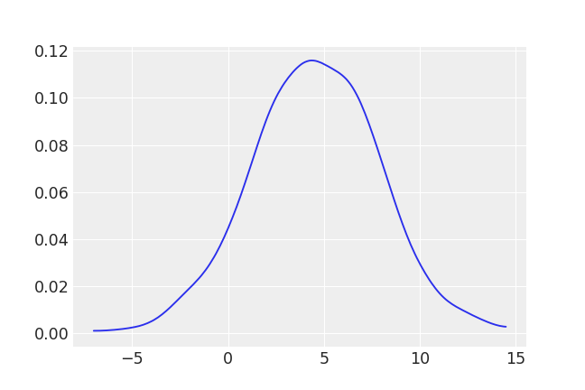
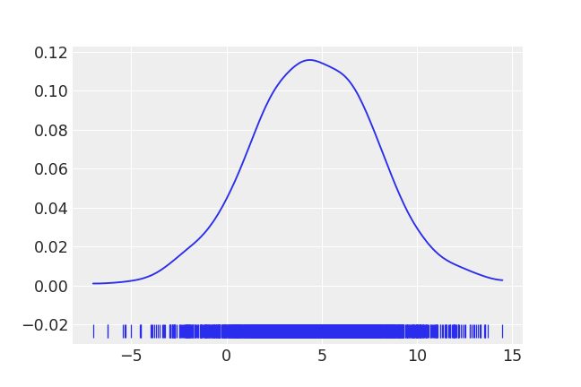
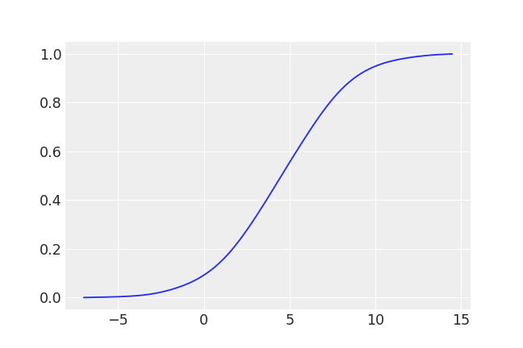
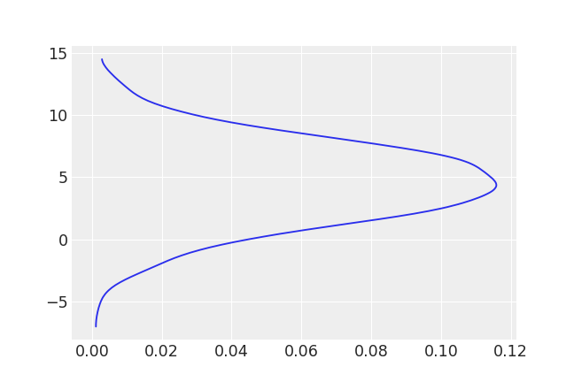
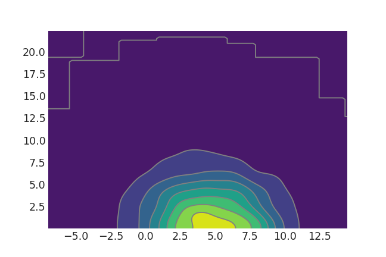
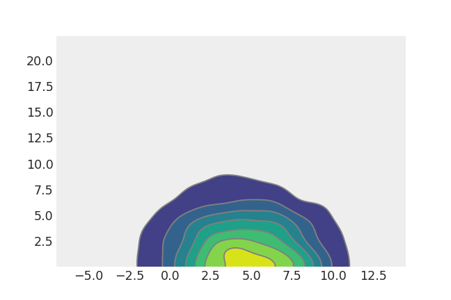
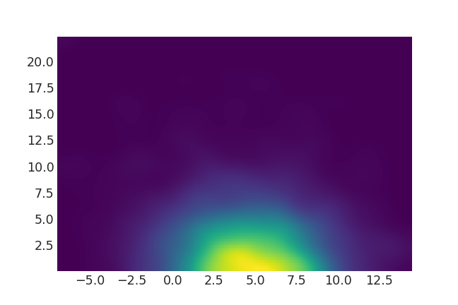

arviz.plot_kde¶
-
arviz.plot_kde(values, values2=None, cumulative=False, rug=False, label=None, bw=4.5, quantiles=None, rotated=False, contour=True, fill_last=True, textsize=None, plot_kwargs=None, fill_kwargs=None, rug_kwargs=None, contour_kwargs=None, contourf_kwargs=None, pcolormesh_kwargs=None, ax=None, legend=True, backend=None, backend_kwargs=None, show=None, **kwargs)[source]¶ 1D or 2D KDE plot taking into account boundary conditions.
- Parameters
- valuesarray-like
Values to plot
- values2array-like, optional
Values to plot. If present, a 2D KDE will be estimated
- cumulativebool
If true plot the estimated cumulative distribution function. Defaults to False. Ignored for 2D KDE
- rugbool
If True adds a rugplot. Defaults to False. Ignored for 2D KDE
- labelstring
Text to include as part of the legend
- bwfloat
Bandwidth scaling factor for 1D KDE. Should be larger than 0. The higher this number the smoother the KDE will be. Defaults to 4.5 which is essentially the same as the Scott’s rule of thumb (the default rule used by SciPy).
- quantileslist
Quantiles in ascending order used to segment the KDE. Use [.25, .5, .75] for quartiles. Defaults to None.
- rotatedbool
Whether to rotate the 1D KDE plot 90 degrees.
- contourbool
If True plot the 2D KDE using contours, otherwise plot a smooth 2D KDE. Defaults to True.
- fill_lastbool
If True fill the last contour of the 2D KDE plot. Defaults to True.
- textsize: float
Text size scaling factor for labels, titles and lines. If None it will be autoscaled based on figsize. Not implemented for bokeh backend.
- plot_kwargsdict
Keywords passed to the pdf line of a 1D KDE.
- fill_kwargsdict
Keywords passed to the fill under the line (use fill_kwargs={‘alpha’: 0} to disable fill). Ignored for 2D KDE
- rug_kwargsdict
Keywords passed to the rug plot. Ignored if rug=False or for 2D KDE Use space keyword (float) to control the position of the rugplot. The larger this number the lower the rugplot.
- contour_kwargsdict
Keywords passed to ax.contour. Ignored for 1D KDE.
- contourf_kwargsdict
Keywords passed to ax.contourf. Ignored for 1D KDE.
- pcolormesh_kwargsdict
Keywords passed to ax.pcolormesh. Ignored for 1D KDE.
- ax: axes, optional
Matplotlib axes or bokeh figures.
- legendbool
Add legend to the figure. By default True.
- backend: str, optional
Select plotting backend {“matplotlib”,”bokeh”}. Default “matplotlib”.
- backend_kwargs: bool, optional
These are kwargs specific to the backend being used. For additional documentation check the plotting method of the backend.
- showbool, optional
Call backend show function.
- Returns
- axesmatplotlib axes or bokeh figures
Examples
Plot default KDE
>>> import arviz as az >>> non_centered = az.load_arviz_data('non_centered_eight') >>> mu_posterior = np.concatenate(non_centered.posterior["mu"].values) >>> az.plot_kde(mu_posterior)
Plot KDE with rugplot
>>> az.plot_kde(mu_posterior, rug=True)
Plot a cumulative distribution
>>> az.plot_kde(mu_posterior, cumulative=True)
Rotate plot 90 degrees
>>> az.plot_kde(mu_posterior, rotated=True)
Plot 2d contour KDE
>>> tau_posterior = np.concatenate(non_centered.posterior["tau"].values) >>> az.plot_kde(mu_posterior, values2=tau_posterior)
Remove fill for last contour in 2d KDE
>>> az.plot_kde(mu_posterior, values2=tau_posterior, fill_last=False)
Plot 2d smooth KDE
>>> az.plot_kde(mu_posterior, values2=tau_posterior, contour=False)
